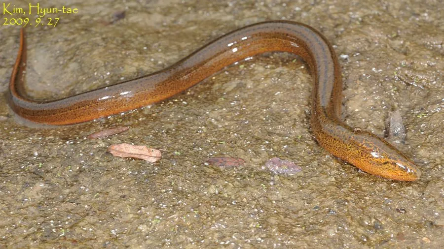

鱼类 · 动物界
黄鳝 Monopterus albus

体形似蛇的淡水鱼，没有胸鳍和腹鳍，能用口腔黏膜呼吸空气，具有雌雄同体、先雌后雄的奇特繁殖习性。
- 分类
- 门脊索动物门纲硬骨鱼纲目合鳃目科合鳃科属黄鳝属
- 栖息环境
- 稻田、沟渠、池塘和沼泽的泥质底，喜洞穴和有机质丰富的水体
- 地理分布
- 中国、日本和东南亚的淡水水域，以稻田和沟渠最为常见
- 保护级别
- 暂无评估；中国未列入国家重点保护野生动物名录
物种志
黄鳝体细长如蛇，呈圆柱形，尾端尖细，没有胸鳍和腹鳍，背鳍和臀鳍退化成皮褶状并与尾鳍相连。体表无鳞，黏液丰富；体色黄褐或灰褐，体侧布满黑色小斑点和横纹。成鱼体长一般 30–50 cm，最大可超过 80 cm、体重 1 kg 以上。
黄鳝分布于中国、日本和东南亚等地的稻田、沟渠、池塘和沼泽，喜欢泥质底和洞穴生活。它是肉食性鱼类，捕食小鱼、虾、蟹、水生昆虫和蛙类。黄鳝能用口腔黏膜呼吸空气，因此在缺氧的水体中也能生存。它最奇特的地方是性别：黄鳝是雌雄同体、先雌后雄，幼体都是雌性，产卵后逐渐转变为雄性，因此体型最大的个体往往是雄性。繁殖期在 5–8 月，雄鱼吐出泡沫筑巢并守护鱼卵。黄鳝肉质细嫩，是常见的食用鱼，人工养殖规模较大。目前它没有IUCN 的正式评估，中国未将其列入国家重点保护野生动物名录。
形态与习性
- 食性肉食性，捕食小鱼、虾、蟹、水生昆虫和蛙类
- 体长一般 30–50 cm，最大可超过 80 cm
- 体重常见 100–300 g，最大可超过 1 kg
- 繁殖雌雄同体、先雌后雄，5–8 月吐泡沫筑巢产卵
- 呼吸能用口腔黏膜呼吸空气，耐低氧
- 习性钻洞穴居，夜间外出觅食，白天多藏在泥中
趣味知识
- 黄鳝幼年时都是雌性，产卵后会逐渐变成雄性，这种现象叫先雌后雄。
- 它能用口腔黏膜呼吸空气，所以在缺氧的稻田里也能存活。
- 黄鳝没有胸鳍和腹鳍，身体像蛇一样，靠摆动在泥中钻行。